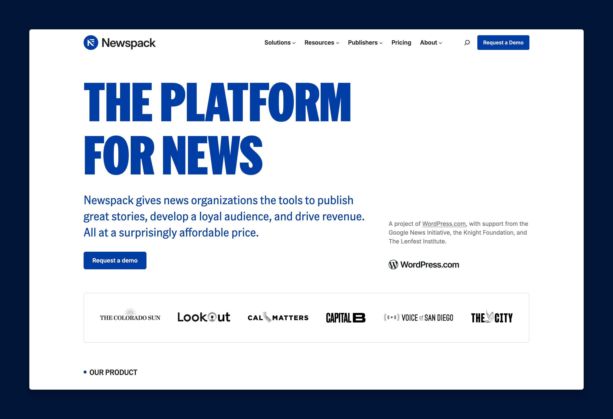

Capture or record. It's already styled.
On brand, automatically
Cobalt backdrop, border, rounded corners, soft shadow — zero clicks, on every capture.
Saved before you blink
Already a file and on your clipboard before the preview appears — drag it into Slack.
Recordings included
Screen recordings get the same treatment: a styled MP4 on a 16:9 canvas, clicks rippling.
Trim built in
Cut a take from its preview — or Style a Video… to brand and trim any MP4 or MOV file.
Ships with a skill
Installs the team screenshot skill for Claude Code — your agent knows the house rules.
Annotate & redact
Arrows, rectangles, spotlight, counters — and pixelate, for the parts nobody should see.
Nine keys to know
⌃⇧1 Full screen
The whole display — desktop icons hidden, wallpaper swapped for the brand background.
⌃⇧2 Window
Hover to pick any window — captured with its true macOS corners and its real shadow.
⌃⇧3 Region
Drag an exact selection with a pixel-precision magnifier — it snaps to screen edges.
⌃⇧4 Timed
Select a region, then a countdown you can pause — stage menus and other vanishing UI.
⌃⇧5 Scrolling
Scroll through a long page — or let Auto-Scroll drive — for one tall stitched shot.
⌃⇧6 Capture Text
Lift text straight off the screen onto your clipboard. Nothing styled, nothing saved.
⌃⇧7 Record Screen
A countdown, then a styled 16:9 clip of your region — clicks ripple in brand color.
Space Flip the mode
Tap mid-selection to switch between region and window — screenshots and recordings.
⌃⇧0 All-In-One
A floating toolbar with every capture mode plus Settings — when the keys escape you.
For humans and agents alike
Newspack Shots isn't just a screenshot app for people. It's also an MCP server — so the AI agents you work with take screenshots through the same styling engine you do.
You press ⌃⇧2; your agent calls a tool. The results are pixel-identical. Docs, P2 posts, and help pages stay visually consistent no matter who — or what — captured them.
It comes with a skill: the team's screenshot playbook — canonical capture sizes, the website recipe, how to annotate — installed for Claude Code automatically and kept up to date by the app.
newspack-shots
the skill and the MCP server share the name · installed at ~/.claude/skills/newspack-shots/
capture_fullscreenstyled full-screen shot, saved and readycapture_windowa named app's window, true corners and shadowcapture_regionan exact pixel region on a 3:2 canvascapture_scrollingauto-scrolls a region and stitches it into one tall shotstyle_videobrands a workflow video agents record in a background browser — hands off your screenvideo_framesextracts stills from a recording so agents can verify what it showsstyle_imagebrand any existing image — how agents style website capturesannotate_imagearrows, rectangles, spotlights, counters — and pixelate, to redact secretscompose_gridlays 2–12 shots into one styled masonry grid — same padding, background, cornersread_textOCR a screen region — read dialogs and errors, nothing savedlist_windowswhat's capturable, so agents don't guess window names
No setup: the app installs the skill and registers the MCP server for Claude Code on first launch — toggle it in Settings → General. See the README for details.
Install in a minute
- Download the DMG and drag Newspack Shots onto Applications.
- The app is unsigned, so macOS blocks it once: double-click it, click Done, then allow it under System Settings → Privacy & Security → Open Anyway.
- Trigger your first capture and grant Screen Recording, then quit and relaunch the app once.
- Working with AI agents? Nothing to do — the app registers the MCP server and installs the team skill for Claude Code automatically (opt out in Settings → General).
- That's it — captures land styled, saved, and on your clipboard.